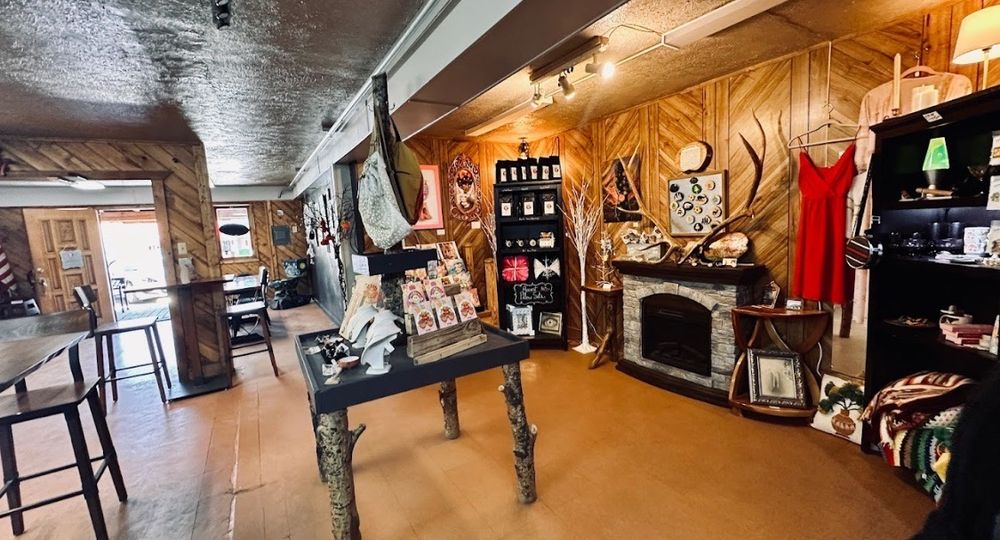

Bakery, Coffee, and Art
Eight the Cake sits in the useful middle ground between bakery, coffee stop, and small art space on Burro Avenue. It is not a large café or full restaurant — it’s better understood as a place to stop for pastries, coffee, cakes, and visual browsing while walking through downtown Cloudcroft. About half a dozen tables provide seating, so it’s small but not strictly grab-and-go.
Art pieces line the walls alongside the bakery case — paintings and eclectic works that add visual texture to the room. It reads more like a bakery with a decorative backdrop than a destination gallery, but the effect makes this more of a linger-a-little stop than a purely functional counter.
The bakery side anchors around organic coffee, espresso, signature cinnamon rolls, pies, pastries, and custom cakes. The custom cake business adds a second lane beyond walk-in pastry trade, making this a dual-purpose shop on one of Cloudcroft’s most walkable blocks.

Pastries & Art

Art on the Walls
Art pieces line the walls alongside the bakery case — paintings and eclectic works that add visual texture to the room. It’s more of a decorative backdrop than a destination gallery, but the effect makes it a more interesting stop than a standard pastry counter.
Burro Avenue Stop
Positioned on Cloudcroft’s most walkable commercial block, Eight the Cake is a natural stop for strollers browsing Burro Avenue. The kind of place where people notice the displays and the bakery case rather than just grabbing a coffee and leaving.
Regional Recognition
Eight the Cake has appeared in Cloudcroft Reader, New Mexico Tourism listings, and New Mexico Magazine coverage — establishing it as a recognizable Burro Avenue stop rather than a brand-new arrival.
Visit Eight the Cake
Everything you need to know before you go.
Location
506A Burro Ave, Cloudcroft, NM 88317. Right on the main commercial block — walkable from anywhere in the village.
Hours
Current hours are not confirmed from strong primary sources. Check their Facebook or Instagram or call directly before visiting.
Contact
Phone: 575-682-3088
Email: eightthecake@gmail.com
Web: eightthecakellc.com
Good to Know
This is a bakery-coffee stop, not a full restaurant. Counter service with about half a dozen tables for seating. Hours may be more variable than travelers expect — check directly. Custom cakes require advance ordering.
Coffee, Cake, and Art on Burro Avenue
Eight the Cake is where organic coffee, signature pastries, custom cakes, and local art come together on Cloudcroft’s most walkable block. A bakery-gallery hybrid worth a stop.